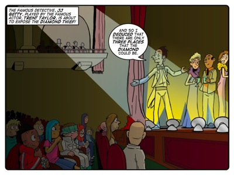
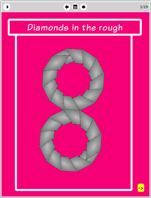

Story: The Diamond Deception
Theme: Logical inferences and deductions.
Synopsis
Tia takes the kids to the theatre. The show is a detective story about a stolen diamond. Everyone loves the play, but what fascinates Jojo the most is that the diamond that is used on stage is real. After the show, Jojo tries to find a way to see the diamond and accidentally catches the entire cast in the process of stealing the gem. Unfortunately he is captured before he can alert security. When Tia notices he is missing she starts a search that quickly turns into a wild goose chase, because she is led in the wrong direction. The Thunderbolt Kids recognise the faulty logic at work that leads Tia away and so they work on their own logical inferences to figure out where Jojo could be.
The story explores logical inferences on a number of levels. Firstly, JJ Getty offers an immediate example of sound deductive reasoning as he uses a process of elimination to logically locate the diamond in the stage play. The Thunderbolt Kids use their training in logic to make the connections that save the day while people like the policeman, the old lady and the jeweller fail to apply the same intellectual standards to their reasoning.
Activity
None.

The eToys project: Diamonds in the rough
In this project Farrah shows learners how to get an eToys object (a diamond) to leave a stamp on a playfield. The purpose of this project is to give learners the experience of creating a pattern out of the diamond stamp, and then to challenge learners to imagine a pattern of their own, and to deduce how to create that pattern by writing an eToys script. Once again we are getting learners to play in mathland.